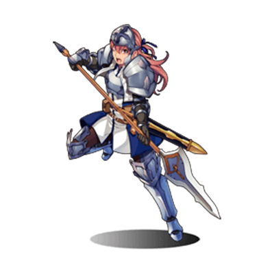
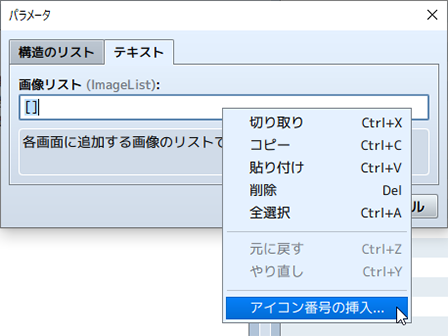

RPG TKOOL MZ HELP
補助ツールの使い方
プラグイン管理
［ツール］→［プラグイン管理］で呼び出せる［プラグイン管理］のツールでは、公式プラグインや作成したプラグインを管理することができます。
一覧に表示されたプラグインをクリックするとダイアログが開き、そのON/OFFやパラメータの値を編集することができます。
プラグインの各パラメータをクリックするとメニューが表示されます。
プラグインのパラメータには、［ファイル］［テキスト］の両方のタブで編集できるものがあります。

パラメータ入力時に右クリックするとメニューが表示され、［アイコン番号の挿入］を選択するとアイコンセットビューアが表示されます。
右クリック「検索」またはプラグイン管理画面でCtrl+F（MacはCmd+F）を押下からプラグインリストの検索が呼び出せます。

「プラグインの設定」ウィンドウ内でCtrl+F（MacはCmd+F）押下からプラグインヘルプの検索が呼び出せます。

サウンドテスト
［ツール］→［サウンドテスト］で呼び出せる［サウンドテスト］のツールでは、プロジェクトに含まれる音楽や音声の素材ファイルを試聴できます。音楽の再生はウィンドウを閉じた後も継続しますので、ゲーム作成中にBGMを流す機能としても利用できます。
ウィンドウは［BGM］（背景音楽）、［BGS］（背景音）、［ME］（効果音楽）、［SE］（効果音）の4つのタブにわかれています。それぞれのタブのファイルリストから曲をクリックで指定します。そのうえで［再生］をクリックすると音楽の再生が開始されます。再生を止めるには［停止］をクリックします。
再生音量は［音量］（0～100％）、ピッチ（音律）は［ピッチ］（50～150％）、位相は［位相］（－100～100）のスライダーでそれぞれ調節できます。
スペースキーで再生することもできます。
イベント検索
［ツール］→［イベント検索］で呼び出せる［イベント検索］のツールでは、作成したイベントをスイッチ、変数、イベント名で検索し一覧表示することができます。
キャラクター生成
［ツール］→［キャラクター生成］で呼び出せる［キャラクター生成］のツールでは、アクターやイベントに割り当てられるキャラクター画像を作成できます。
［男性］［女性］［子ども］のタブをクリックして画面を切り替え、各設定項目ごとに用意された［バリエーション］［色］［オフセット］を指定します。
選択したバリエーションと色は［プレビュー］に表示されます。
- ランダム生成
- すべてのパーツをランダムに指定します。
- 顔グラフィック
- 顔グラフィックの書き出しウィンドウを開きます。
- 歩行キャラ
- 歩行キャラの書き出しウィンドウを開きます。
- 倒れキャラ
- 倒れキャラの書き出しウィンドウを開きます。
- 戦闘キャラ
- サイドビュー戦闘キャラの書き出しウィンドウを開きます。
- 設定の保存
- 作成したキャラクターの設定を保存します。
- 設定の読み込み
- 保存したキャラクターの設定を読み込みます。
書き出しウィンドウ
- インポート
- ベースの画像をファイルから読み込み、新たに作成した画像を配置することができます。
- エクスポート
- 画像をファイルに保存します。
ダンジョン生成
マップリストでマップデータの項目を右クリックし、［ダンジョン生成］を選択して呼び出すことができます。
壁用と地面用に使うタイルを指定すると、自動的に迷路状のマップが描画されます。
ダンジョンの生成は選択したマップを対象に行なわれますので、広いダンジョンを作りたい場合はマップのサイズを大きくしてください。マップのサイズが小さすぎると、ダンジョンらしいマップが描画されません。
- タイプ
-
［部屋］と［迷路］のどちらかのタイプを選択します。
［部屋］を選択すると部屋を通路でつないだタイプのダンジョンが描画されます。
［迷路］を選択すると通路のみのダンジョンが描画されます。 - オプション
-
- 余白の追加
- 選択するとマップの上下左右に余白ができます。
- 広い通路
- 選択すると通路が広くなります。
- 壁
-
壁に使用するタイルを選択します。
※使用中のタイルセットのA4（壁）から選択します。 - 床
-
床に使用するタイルを選択します。
※使用中のタイルセットのA5（通常）から選択します。

テストプレイ
［ゲーム］→［テストプレイ］で実行できるテストプレイの機能は、作成中のゲームをその場でテストするものです。設定やイベントが意図したとおりに動作するかを、配布するゲームと同じように確認できます。
テストプレイ中は、Ctrlキーを押しながら移動すると、移動不可に設定した床をすり抜けることができます。
- デバッグ機能の使い方
-
テストプレイ中に［F9］キーを押すとデバッグ画面が表示されます。この画面では、表示時点のスイッチや変数の値を変えることができます。
※デバッグ画面で［F9］を押すか、キャンセルボタンを押すとテストプレイに戻ることができます。
変数の値を変えるには、画面左側のリストで対象のスイッチ／変数の範囲（頭の［S］がスイッチ、［V］が変数、数字が番号の範囲を表します）を選択して決定ボタンを押し、右側のリストで対象のスイッチ／変数にカーソルを合わせます。そのうえでスイッチの値（ON／OFF）の値は決定ボタン、変数の値は左右の方向ボタンとL／Rボタンで変更します。 - デベロッパーツールの使い方
-
テストプレイ中にF8キーを押すとデベロッパーツールが起動できます。
デベロッパーツールはGoogle Chromeに搭載されたものと同じ機能です。HTML5で構成されたゲームの各要素を確認することができます。 - テストプレイの終了
- テストプレイを終了するには、ウィンドウの［×］（閉じる）のボタンをクリックします。
素材管理
［ツール］→［素材管理］で呼び出せる［素材管理］のツールでは、プロジェクトに含まれる素材ファイルを管理できます。ウィンドウ各部の内容やボタンの機能は以下のとおりです。なおオリジナルの画像や音楽などのファイルをゲームの作成に使用するには、所定の規格に準じる必要があります。詳しくは［素材規格］の項目をご覧ください。
- フォルダリスト
- ウィンドウの左側に素材ファイルを収めるフォルダのリストが表示されます。素材ファイルを取り込むときは、ここで用途に応じたフォルダを指定します。
- ファイルリスト
- ウィンドウの右側にフォルダリストで選択したフォルダに含まれるファイルが表示されます。
- プレビュー
- ［ファイルリスト］で選択したグラフィックの素材ファイルの内容を表示します。音声ファイルを確認するには［サウンドテスト］のツールを使用してください。
- インポート
-
プロジェクト素材ファイルを取り込みます。取り込み先のフォルダを［フォルダリスト］で指定した後にクリックし、対象の素材ファイルを指定します。
ファイル選択時に複数のファイル選択して一度にインポートすることもできます。 - エクスポート
- プロジェクトの素材ファイルをプロジェクト外部に保存します。エクスポートしても、プロジェクト内の素材ファイルは残ります。
- 削除
-
［ファイルリスト］で選択した素材ファイルをプロジェクトから削除します。削除したデータは元に戻せませんので注意してください。
Shiftキーでファイルを複数選択して一度に削除することもできます。 - DLC
-
追加素材を格納するdlcフォルダ※ から素材ファイルを取り込みます。
ボタン押下後、dlcフォルダが開きますので、対象のファイルを指定します。
※dlcフォルダ
RPGMZの実行ファイルの配下にあるフォルダです。
Steam版ではSteamストアで購入した素材は自動的にdlcフォルダへ追加されます。
オプション
［ツール］→［オプション］で呼び出せる［オプション］では、透明色の設定とマップのグリッドの設定をすることができます。
- 透明色
- 透明の背景にする部分の色を指定します。
- マップグリッド
- ［表示］にチェックを入れるとマップエディターのグリッド表示が有効になります。
- UI
-
- テーマ
- エディターの見た目を変更します。
- オブジェクトの選択
-
イベントコマンドのアイテムや武器・防具などの項目を選択するUIを変更します。
［ドロップダウン］・・・ドロップダウンで選択します。
［展開］・・・別ウィンドウが開きます。
［自動］・・・項目数によって自動でUIが選択されます。
チュートリアル
［ヘルプ］→［チュートリアル］で［チュートリアル選択］画面が表示されます。
目的のステップを選択し、チュートリアルを開始します。
チュートリアルの指示に従って操作を進めてください。